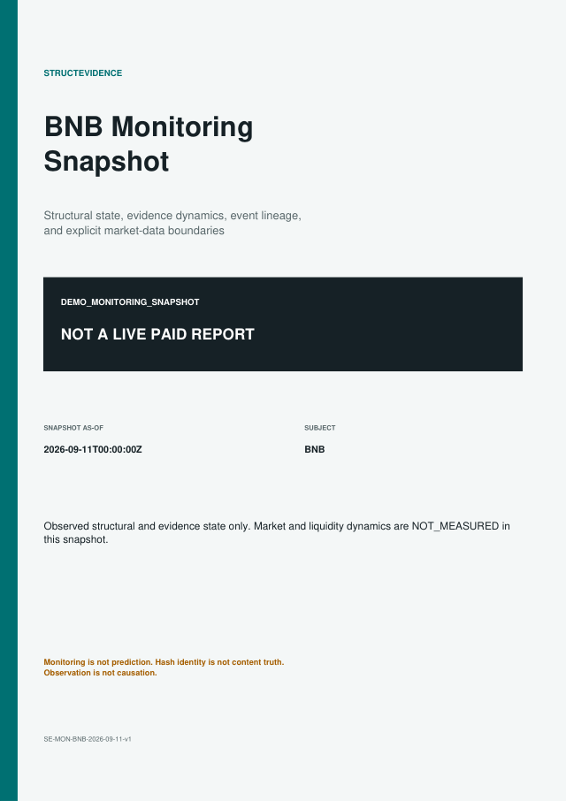

Portable state exports
Monitoring snapshot reports
A snapshot report freezes one dated monitoring state for review and verification. It is not live monitoring, price research, or a trading recommendation.
Public demo
BNB monitoring snapshot / v1.0

This demo packages the current structural Level, established Delta, event ledger, Evidence Dynamics, explicit market-data gaps, GDR action boundary, and RTP hashes.
DEMO_MONITORING_SNAPSHOT
NOT A LIVE PAID REPORT
Product hierarchy
Monitoring access comes first
| Capability | Public pilot | Request-based service |
|---|---|---|
| Current structural and evidence state | BNB pilot | Scoped subjects |
| State-change monitoring | Current snapshot | Scope and cadence confirmed by quote |
| Historical replay | BNB public timeline | Extended history where evidence is available |
| Snapshot export | Demo PDF + JSON | Authorized frozen PDF export |
| Settlement | Not required for demo | USDT-TRC20 after written quote |